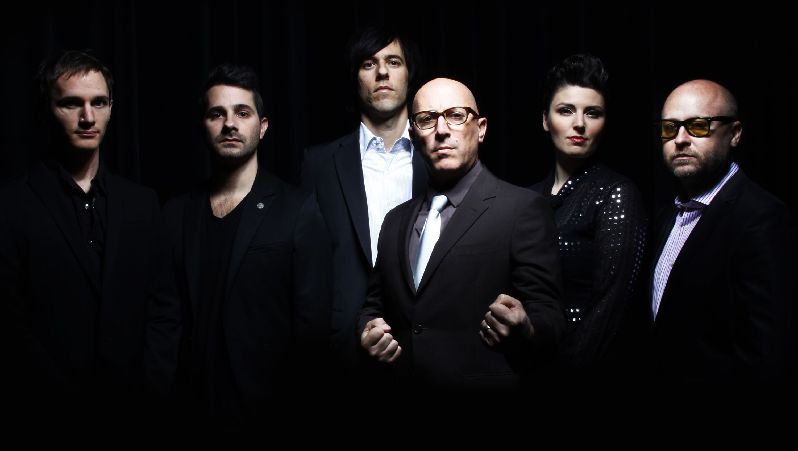

Puscifer is an American rock supergroup formed in Los Angeles by Maynard James Keenan. As Keenan is the only permanent member, he considers the project to be his "creative subconscious". In light of this, Puscifer is considered a pseudonym for his solo work.
Puscifer's original name was Umlaut, "a premiere improvisational hardcore band". The name "Puscifer" was first publicized as a fictional band in the first episode of Mr. Show, including Keenan and Adam Jones as members. Jones is not associated with Puscifer otherwise, although artwork by Jones has been featured on Puscifer apparel (the "Your Mom's a Bitch" shirt, specifically). Keenan describes Puscifer as "simply a playground for the various voices in my head, [...] a space with no clear or discernible goals, [...] where my Id, Ego, and Anima all come together to exchange cookie recipes." Keenan also worked on short films with Ford Englerth and Jeffrey Brooks from Red Rock Entertainment Development; these shorts were done in a similar manner to that of Mr. Show and Tom Waits' Big Time.
Puscifer is "as much a clothing line as it is a band", with the clothing items produced in limited numbers. Keenan collaborated on a leather jacket with Paul Frank. On September 16, 2008, Keenan updated the puscifer.com blog, revealing that the first ever Puscifer store would be opening "hopefully" by October 1 in Jerome, Arizona. Occupying a small space above a tattoo parlor, the store opened on October 3, 2008. In addition to the merchandise available on the band's online store, Keenan has also made available locally roasted coffee, art, and an ever-changing list of limited edition collectibles.